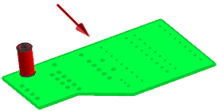
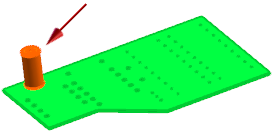
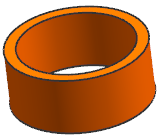

选择分析→简单干涉。
将打开简单干涉对话框。
对于第一体，选择组件 des06_laser_ic_board_13。

对于第二体，选择 des06_laser_c1_13。

在干涉检查结果组的结果对象列表中，选择干涉体。
点击确定。
已创建干涉体，但在图形窗口中被组件挡住了。
打开部件导航器。
部件导航器中出现一个特征体，这个实体就是在您的工作部件(顶层装配 des06_laser_test_assm_1)中创建的干涉体。
隐藏 des06_laser_ic_board_13与des06_laser_c1_13。
现在可以在图形窗口中看到干涉体了。
